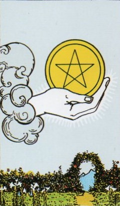
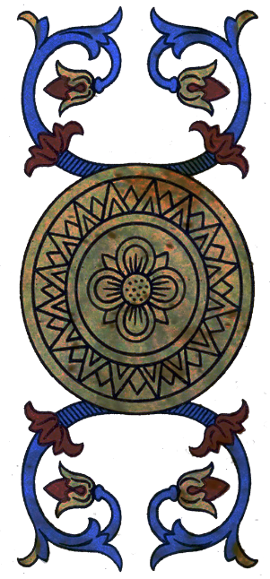
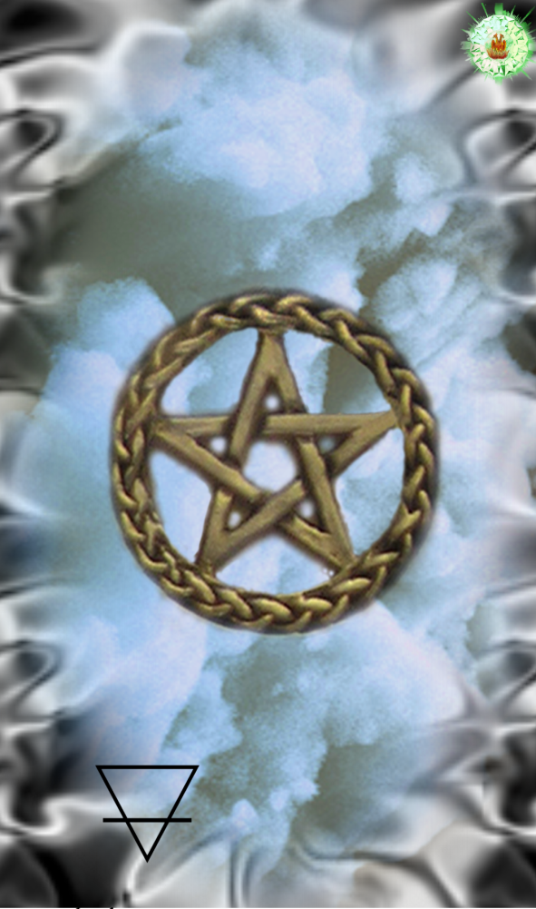
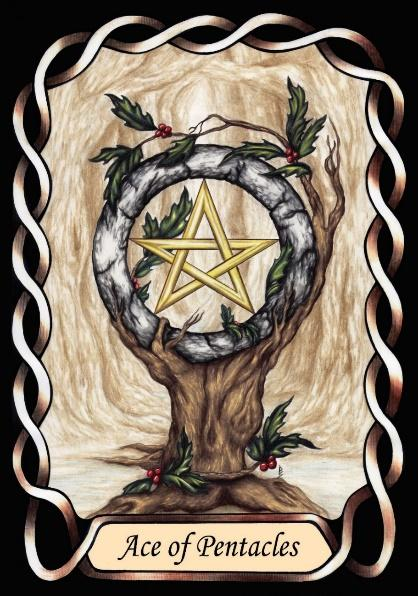

Ace of Pentacles




Earth Practicality
The Pentacles is the Principle of Earth, which is the solid form of the elements.
Earth imbues in people the ability to understand the practical needs of survival of the individual and of the species.
[P6] … leaving Earth and Water below.
[P7] Earth and Water stayed so intermingled that they could not be distinguished from each other. …
RWS Imagery
In the Waite-Smith deck, a pentacle, symbol of Earth, issues forth from the cloud, as described in the Pymander. Smith has chosen to represent this issuance with a hand.
Discussion
Our bodies need food, shelter, and tools to help us acquire these things. The more we have, the safer we feel, but this can lead to obsession and greed.
Earth is both cold and dry. When describing personality, cold is introspective and focused on the self. Dry is concerned with physical results, survival.
Summary
Represents the principle of Earth, practicality, and material stability.